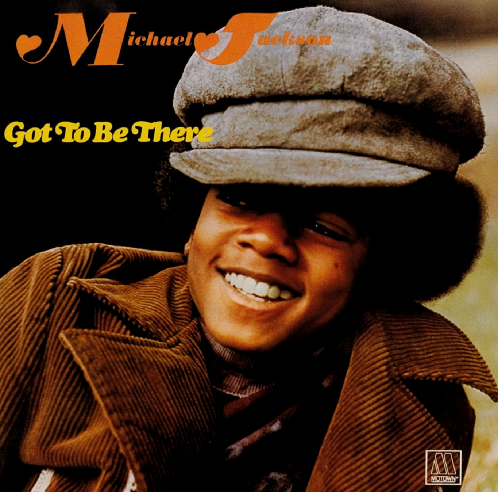
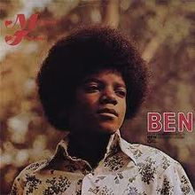
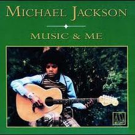
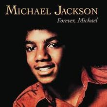
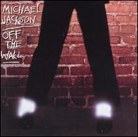

Discografia de Michael JacksonAqui podemos conhecer as obras que Michael Jackson nos deixou, ao todo o artista tem 10 álbuns de estúdio, 1 álbum ao vivo, 72 álbuns de compilação, 16 álbuns de vídeo, 6 extended plays (EP), 59 singles, 43 vídeos musicais, 3 bandas sonoras, 7 remixagens, 2 álbuns póstumos  Go To Be ThereA Motown lançou o álbum quase paralelo ao lançamento de um membro de uma outra famosa família, Donny Osmond. O álbum tem sucessos históricos do cantor como a faixa título e "I Wanna Be Where You Are", e gravações cover de músicas clássicas da época como, "Ain't No Sunshine" de Bill Withers, "Rockin' Robin" de Bobby Day, "You've Got A Friend" de Carole King e "Love Is Here And Now You're Gone" das Supremes. A Motown investiu no repertório romântico do cantor, já que as músicas dos Jackson 5 eram mais agitadas, algo que deu certo e durou em todos os álbuns solo do cantor na gravadora.  BenBen é o segundo álbum de estúdio da carreira solo do cantor americano Michael Jackson. Lançado em agosto de 1972, sete meses depois de seu álbum de estreia, Got to Be There, viu sua faixa-título atingir o primeiro lugar nas paradas de sucesso do país, vendendo mais de um milhão de cópias. O álbum mostrava um Jackson em crescimento tanto vocal quanto artisticamente. Várias músicas do álbum são baladas, um gênero que era raro no principal repertório dos Jackson 5, mas se tornaria marca registrada de Michael Jackson no curso da sua carreira solo de quatro décadas.  Music & MeO álbum foi lançado num período difícil para Michael, pois estava entrando na adolescência e sua voz estava mudando. Influênciado por colegas de trabalho como Stevie Wonder e Marvin Gaye, Michael queria por suas próprias composições no álbum, mas a Motown não permitiu isso, começou então os primeiros desentendimentos com a gravadora que levou a saída dos Jackson 5 no futuro. Apesar de aparecer dedilhando um violão na capa do álbum, não foi permitido o cantor tocar nenhum instrumento no álbum. Como os Jackson 5 estavam em turnê pelo mundo, a promoção do álbum foi limitada, chegando a vender somente 2 milhões de cópias. Assim como a maioria dos álbuns solo do cantor na Motown, Music & Me era composto de muitos covers de músicas já conhecidas, mas que mesmo assim fizeram grande sucesso ou se tornaram clássico na voz do pequeno Michael, como With a Child's Heart do também pequeno Stevie Wonder, All the Things You Are, Too Young de Nat King Cole e Doggin 'Around de Jackie Wilson. Os grandes destaques do álbum que se tornaram clássicos foram With a Child's Heart, música que resumiu posteriormente a vida do astro, assim como Music and Me que resumiu a sua carreira. A canção Happy, também fez bastante sucesso posteriormente.  Forever, MichaelForever, Michael é o quarto álbum de estúdio lançado por Michael Jackson pela Motown como parte de um acordo de rescisão de contrato em 1975. O grupo Jackson 5, formado pelo cantor e quatro irmãos, estava deixando a gravadora e assinaria com a Epic para conquistar o direito de compor e produzir as próprias canções. Devido às circunstâncias do momento, o álbum deixou de ser prensado em uma dezena de países e sofreu os efeitos de uma publicidade pouca e deficiente. Em 1974, o Jackson 5 havia retornado ao topo das paradas com os sucessos "Get It Together" e "Dancing Machine", parcialmente devido à insistência do pai e empresário do grupo, Joe Jackson, para que a Motown incorporasse o funk ao som dos irmãos [1]. A fórmula, apesar de bem-sucedida, não foi adotada em Forever, Michael, um álbum produzido essencialmente pelos irmãos Edward e Brian Holland, responsáveis por canções das Supremes ("Stop! In the Name of Love") e Four Tops ("I Can't Help Myself"). Nos Estados Unidos, duas das dez faixas do álbum foram lançadas como compacto: "We're Almost There" e "Just A Little Bit Of You". No Reino Unido, como na maioria dos países Europeus, nenhuma das canções de Forever, Michael chegou às lojas. O terceiro compacto americano, "One Day In Your Life", terminou cancelado. No Brasil, a faixa foi lançada às rádios e acabou como um dos maiores sucessos da carreira de Michael, depois de entrar para a trilha-sonora da novela Cuca Legal, da Rede Globo. Com o sucesso internacional do álbum Off the Wall pela Epic em 1980, a Motown deu nova chance à música em 1981, levando às lojas um compacto de "One Day In Your Life" seis anos depois do lançamento original. A canção se tornou o primeiro compacto do astro a chegar ao topo das listas no Reino Unido e conquistou a posição máxima também na África do Sul, Bélgica, Irlanda e Holanda. O sucesso levou ao subseqüente lançamento de "We're Almost There" em vários países Europeus.  Discografia de Michael JacksonOff the Wall é o quinto álbum de estúdio do artista musical estadunidense Michael Jackson. Foi lançado em 10 de agosto de 1979, através da Epic Records. Enquanto trabalhava no filme The Wiz, Jackson e Quincy Jones se tornaram amigos, e Jones concordou em trabalhar com Jackson em seu quinto projeto de estúdio. As sessões de gravação do disco tiveram início em dezembro de 1978 nos estúdios Allen Zent Recording, Westlake Audio e Cherokee, localizados em Los Angeles, Califórnia. Jackson colaborou com outros artistas, como Paul McCartney, Stevie Wonder e Rod Temperton. O cantor compôs e produziu três das dez faixas do álbum. Foi seu primeiro trabalho lançado através da Epic Records, gravadora em que Jackson permaneceu até a sua morte, em 2009. Musicalmente, Off the Wall apresenta uma mudança musical dos trabalhos anteriores de Jackson durante sua estadia na Motown Records, incorporando estilos dançantes como o funk, o dance-pop, a música disco e o soft rock, além de gêneros suaves como o jazz e baladas. O álbum foi aclamado por críticos de música contemporânea, que prezou sua produção e os vocais de Jackson. Consequentemente, foi reconhecido pela revista Rolling Stone como o 68º melhor álbum de todos os tempos e foi nomeado a dois Grammy Awards para Best Disco Recoring e Best Male R&B Vocal Performance, vencendo a segunda. Comercialmente, obteve um desempenho exitoso, liderando as tabelas da Austrália; em 2014, foi certificado como platina óctupla pela Recording Industry Association of America (RIAA), vendendo 10 milhões de cópias nos Estados Unidos. Mundialmente, vendeu cerca de 35 milhões de cópias, convertendo-se num dos álbums mais vendidos de todos os tempos. Foram lançados cinco singles do álbum, com "Don't Stop 'til You Get Enough" e "Rock with You" tornando-se sucessos internacionais, liderando a tabela musical Billboard Hot 100. Em 16 de outubro de 2001, Off the Wall foi relançado em uma edição especial pela Sony Music com entrevistas especiais e as versões originais de "Don't Stop 'til You Get Enough" e "Workin' Day and Night". O álbum foi novamente aclamado pela crítica contemporânea mesmo 22 anos depois de seu lançamento. Em 2008, A National Association of Recording Merchandisers converteu o disco na 80ª entre os 200 álbuns definitivos no Rock and Holl of Fame. |